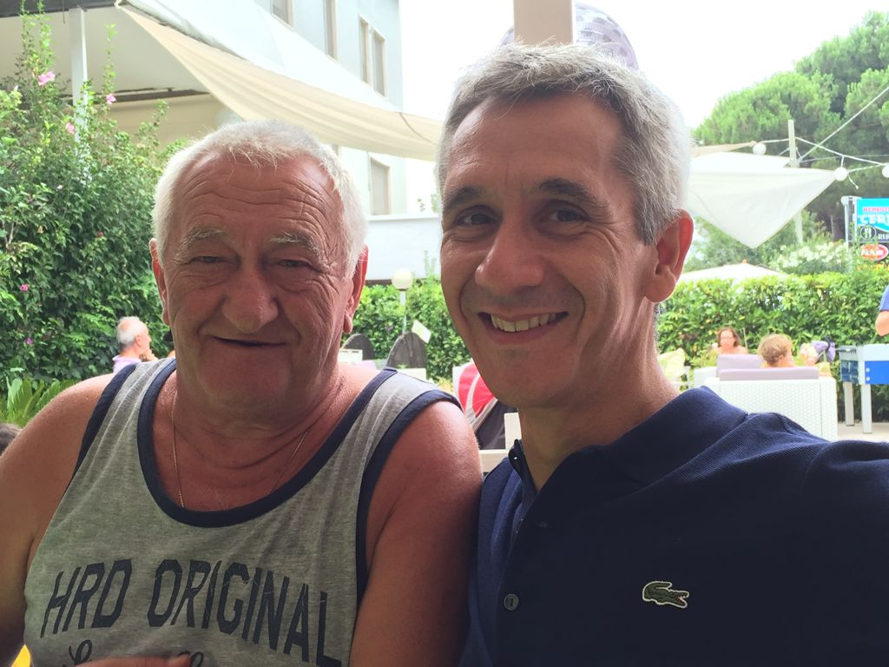

Fabio Palusci, mentor di BoostAbruzzo, é un professionista expat abruzzese a Malta che nutre un amore smisurato per le sue radici e per la nostra regione. Abbiamo avuto il piacere di intervistarlo per la notra rubrica DI CHI SI LU FIJE?. Grazie Fabio, speriamo di vederci presto a Malta o a Silvi!
Fabio, raccontaci un po’ di te! Da dove vieni, chi sei e di cosa ti occupi?
Mi presento velocemente: Palusci Fabio, classe 1973 e attualmente vivo a Malta. Figlio di emigranti, o meglio expat, abruzzesi: padre teramano di Bisenti e madre pescarese di Loreto Aprutino. Un bel mix! Sono nato in Belgio ma i miei sono riusciti, volente o nolente, a tenere intatta la mia “Abruzzesità” (se possiamo usare questo termine). Ho trascorso lunghi periodi in Abruzzo ma non ho mai deciso per un ritorno definitivo. Mi sono laureato come traduttore nella bellissima Anversa (non Anversa degli Abruzzi ma la città d'Anversa in Belgio). Ho iniziato a lavorare per una multinazionale americana che, dopo qualche progetto come expat temporaneo, mi ha portato a Roma, dove ho vissuto circa 15 anni prima di spostarmi nuovamente all'estero nel 2015, questa volta a Malta dove mi è stata offerta un'opportunità “che non potevo rifiutare”.
Attualmente sono Head of Procurement presso Betsson Group. Ho la responsabilità del processo di spesa per uno dei più grandi gruppi di iGaming (Digital Entertainment) al mondo. Betsson offre i propri servizi completemente online in oltre 17 mercati regolamentati con oltre 20 Brands. Questo ruolo mi permette di lavorare in una Internet Technology Company con responsabilità finanziarie, legali (compliance e sicurezza) e commerciali. Una bella sfida!
Com’è la vita da expat?
Malta permette una bella vita da expat. Sole e mare a portata di mano. La posizione geografica facilita molto l'accesso alle realtà italiane. Grazie al volo diretto Malta – Pescara mi viene molto facile pianificare un rientro. Sembra quasi di essere in trasferta con i benefici che offre una realtà come Malta.
Ti manca l’Abruzzo?
L’Abruzzo non può che mancare! Ognuno di noi ha il suo “luogo di comfort” dove si sente veramente a casa. Anche se non ho passato tutta la mia infanzia in Abruzzo... è senza dubbio il mio “luogo di comfort”. Da circa 30 anni, trascorro le mie vacanze estive (e non) a Silvi Marina. Ho abitato lì da studente ed è diventata la nostra "casa" per il periodo estivo.
È un pò il comfort place per tutta la famiglia.
Quali sono i pro e i contro di vivere all’estero?
Vivere all'estero può portare tanti vantaggi... Sia personali che professionali.
L'esposizione ad ambienti multiculturali permette di sviluppare la propria personalità con una dimensione diversa. È risaputo che ci si sente ancora più italiani (o meglio Abruzzesi) fuori dal proprio territorio. Per fortuna è anche facile “rientrare” per brevi periodi (forse non in questo preciso momento ma torneremo a farlo al più presto).
Le opportunità professionali sono molto ricche all'estero. Alcuni paesi hanno sfruttato molto bene le opportunità offerte dalla digitalizzazione e dall'innovazione. Penso che BoostAbruzzo sia una fantastica iniziativa per stimolare maggiormente queste opportunità sul territorio abruzzese.
Credo che il vero svantaggio di vivere all'estero sia la mancanza della quotidianità della vita abruzzese. La vera bellezza delle cose sta nei dettagli e nelle sfumature che non puoi assaporare all'estero.
Torneresti in Abruzzo?
Assolutamente sì. Il piano è proprio quello!
Abruzzo: Mare o montagna?
Sappiamo che l'Abruzzo evoca sia mare che montagna. La mia preferenza comunque va al mare.
Qual è il tuo piatto abruzzese preferito?
Scelta difficilissima vista la vasta scelta... ma io voto per “li surgitt” al ragù tutta la vita. Ovviamente con un buon Montepulciano.
Un’ultima domanda permetticela... Di chi si lu fije?
Sono figlio di Elio Palusci, teramano (Bisenti) classe 1946, emigrato in Belgio nel lontano 1966 per diventare operaio nello stabilimento automobilistico Ford. Anche mio padre era ed è tutt'oggi un expat anche se in quei tempi venivano chiamati emigranti. Bisenti, che una leggenda considera la città natale di Ponzio Pilato, è un paesino di quasi 2000 abitanti ai piedi del massiccio montuoso del Gran Sasso, nell'alta valle del fiume Fino. Palusci è un cognome tipicamente bisentese con prevalente presenza nella frazione di Chioviano Alto. Infatti ho trascorso parecchio tempo delle mie vacanze estive nei vari luoghi di questa zona della regione.
Se la storia di Fabio ti ha incuriosito, connettiti con lui su linkedin: Fabio Palusci
